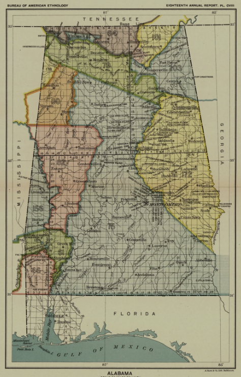
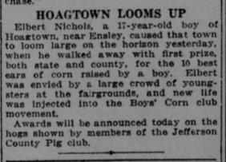

Sylvan Springs Timeline
August 9, 1814
The Treaty of August 9, 1814, between the US and Creek Nation, with General Andrew Jackson, obtained a large part of present-day Alabama, inclusive of what would become Sylvan Springs. (Source: USGWArchives)

October 1916
Town of Hoagtown organized.
Named after William T. Hogan, stepson of early settler Dudley Goolsby. The town was later renamed to Sylvan Springs, for a nearby fresh source of water.
October 3, 1916
Elbert Nichols, 17, from Hoagtown, won the state and county first prize for the 10 best ears of corn raised by a boy. Appeared in the Birmingham Age Herald. (Source: Library of Congress)

May 22, 1957
Town of Sylvan Springs Incorporated.
May 1957 - Sep 1960
Mayor: Ollis Hatcher
July 13, 1957
First Council Meeting
Location: Harmon's Service Station (Temporary Town Hall)
Aldermen:
- Alderman 1: Oscar Hogan
- Alderman 2: James A. Jones
- Alderman 3: John Honeycutt
- Alderman 4: Aubry Early
- Alderman 5: William T. Parkin
- Mayor: Ollis Hatcher
Aug 1957
Police Department established
Sep 1957
License fees and Building Inspections established
1957
First fire truck purchased
1961
Property purchased for what is now the "Old Town Hall"
Oct 1960 - Sep 1964
Mayor: John Honeycutt
Jan 1962
Construction began on the first town hall
May 1964
Police Department dissolved
Oct 1964 - Sep 1968
Mayor: Paul Patterson
Oct 1968 - Feb 1972
Mayor: W.H. "Bill" Thomas
Mar 1972 - Apr 1972
Mayor: Louise Thomas
May 1972 - Sep 1984
Mayor: James Hatcher
Feb 1975
Community Center purchased from Jeff Co Board of Education
Apr 1977
18.76 acres purchased for walking track
Jan 1986
Annexation of West Grove doubling the size of the town
Oct 1984 - Sep 1988
Mayor: David Hogan
Feb 1988
Shirley Honeycutt, Town Clerk, begins to open Town Hall for business three days per week
Oct 1988 - Sep 2004
Mayor: Wallace Thompson
Apr 1989
Paramedic service established
1990
Walking track opens
Jul 1990
Town Hall remodeled
Aug 1990
Zoning Ordinance adopted
Oct 1990
Fire Station (former) building purchased
Apr 1998
F-5 Tornado devastates town causing the death of Town Council Member Lenora McCullers along with citizens Joe & Betty Parker and Patricia Sullivan
Jun 2000
5 acres adjoining Community Center and ball park purchased
Jun 2001
Annexation of 3300 acres
Mar 2003
"Loggins House" purchased and used for Jeff Co Sheriff Substation
Jul 2003
1 acre on corner of 269 and Rock Creek purchased
Jan 2004
Office of Town Clerk becomes a full-time position held by Peggy Shadix
Oct 2004 - Present
Mayor: Stevan Parsons
Sep 2005
2.75 acres adjoining ballpark purchased
2006
Playground and pavilion construction
Jul 2007
Town celebrates 50 years
Oct 2008
Community Center renovation and Senior Fitness Center addition
Jan 2009
Walter Lee Dump established
Dec 2009
Contract Post Office opens
Jun 2012
Groundbreaking for new (current) Town Hall and Fire Station
Nov 2013
Restroom constructed at walking track
Jan 2014
Moved into new Town Hall
May 2014
Dollar General opened
Nov 2014
Contract Post Office becomes Village Post Office and moved to Town Hall
Dec 2015
Second Pavilion constructed
Oct 2016
Town Website launched
Sep 2017
Town's VPO becomes an acceptance facility for Passport applications
Dec 2019
Storm Shelter constructed
Aug 2020
New air packs and life packs purchased for Fire Department
Dec 2020
Electronic sign installed in front of Community Center
Dec 2020
Toddler addition to playground
Dec 2023
New Fire Engine purchased